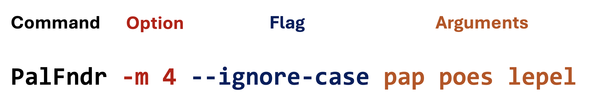

33. Command-line processing#
33.1. What is the commandline interface?#
The Command Line Interface (CLI) is an editing environment that is text-based.
It uses text ‘commands’ to interact with the operating system and perform numerous operations.
Usually, commands can be executed and their mode of action “adjusted” using options (flags) and parameters.
For instance, if we want to create a Palindrome finder app, we would like to run it with the possibilities outlined below.

So, we have these four basic elements in a command:
the command or executable. The program that you want to run. All that comes after is meant to adjust the way the program executes, or to pass it data to work on.
options. These are also called named arguments. They are usually passed with a single letter prefixed with a dash (
-m) or a word prefixed with two dashes (--min). These are conventions only, not strict rules. After the option comes a space and then the option value (-m 4)flags. These are similar to options, with the difference they are not followed by a value. In this example
--ignore-casesays to look for palindromes ignoring the case of characters.parameters. These usually come last. They have no
option=prefix. They are simply values passed positionally. In this case, they are the words that need to be checked for being a palindrome.
Besides these conventions, we would like to get a help “page” to appear when we run a command with -h or --help. Something like this:
~$ java -jar PalindromeFinder.jar --help
Usage: PalindromeFinder [-hiV] [-f=<filename>] -m=<minimumLength> [WORD...]
[WORD...] Words to check for palindromicity
-f, --file=<filename> Input file with words
-h, --help Show this help message and exit.
-i, --ignore-case Ignore case when checking for palindromes
-m, --min=<minimumLength>
Minimum length of palindrome
-V, --version Print version information and exit.
33.2. PicoCLI#
Now, let’s build an app just like this. There are quite a few command line argument parsers out there. For this tutorial, we have chosen the PicoCLI tool. This is quite easy to master, and has the advantage that the options are directly linked to you instance variables by means of annotations.
First, you need to specify the dependency on this library in the dependencies section of the build.gradle file:
dependencies {
implementation 'info.picocli:picocli:4.7.5'
//more dependencies
}
So, let’s dive right into the PalindromeFinder app code. Details will be discussed below.
package nl.bioinf;
import picocli.CommandLine;
import picocli.CommandLine.Command;
import picocli.CommandLine.Option;
import picocli.CommandLine.Parameters;
import java.util.Arrays;
@Command(name = "PalindromeFinder", version = "PalindromeFinder 0.0.1", mixinStandardHelpOptions = true)
public class PalindromeFinder implements Runnable {
@Option(names = {"-m", "--min"},
description = "Minimum length of palindrome",
required = true)
private int minimumLength;
@Option(names = {"-i", "--ignore-case"},
description = "Ignore case when checking for palindromes",
defaultValue = "false")
private boolean ignoreCase;
@Option(names = {"-f", "--file"},
description = "Input file with words")
private String filename;
@Parameters(arity = "0..*", paramLabel = "WORD", description = "Words to check for palindromicity")
private String[] words;
@Override
public void run() {
System.out.println("ignoring words below " + minimumLength + " characters");
System.out.println("ignoreCase = " + ignoreCase);
System.out.println("filename = " + filename);
System.out.println("words = " + Arrays.toString(words));
if (filename != null) {
System.out.println("Reading words from file " + filename);
//not implemented yet
}
if (words != null && words.length > 0) {
System.out.println("Checking words from command-line " + Arrays.toString(words));
reportPalindromes(words);
}
else {
System.out.println("No words given from command line or file");
}
}
private void reportPalindromes(String[] words) {
for (String word : words) {
if (word.length() < minimumLength) continue;
if (isPalindrome(word)) System.out.println(word + " is a palindrome");
else System.out.println(word + " is not a palindrome");
}
}
private boolean isPalindrome(String word) {
if (word.length() < minimumLength) {
return false;
}
if (ignoreCase) {
word = word.toLowerCase();
}
int left = 0;
int right = word.length() - 1;
while (left < right) {
if (word.charAt(left) != word.charAt(right)) {
return false;
}
left++;
right--;
}
return true;
}
public static void main(String[] args) {
int exitCode = new CommandLine(new PalindromeFinder()).execute(args);
System.exit(exitCode);
}
}
And this is the output when run
~$ java -jar PalindromeFinder -m 4 --ignore-case pap poes lepel legovogel ignoring words below 4 characters ignoreCase = true filename = null words = [pap, poes, lepel, legovogel] Checking words from command-line [pap, poes, lepel, legovogel] poes is not a palindrome lepel is a palindrome legovogel is a palindrome
Below is a walk-through of all relevant elements, starting with @Command.
@Command(name = "PalindromeFinder", version = "PalindromeFinder 0.0.1", mixinStandardHelpOptions = true)
The @Command annotation marks this class as a command-line app.
The name = "PalindromeFinder" attribute simply defines the name of the app used in the help documentation.
Similarly, version = "PalindromeFinder 0.0.1" gives version info when run with -V.
The mixinStandardHelpOptions attribute adds --help and --version options to your application.
Since this is a command-line app managed by PicoCLI, we need to provide the class as a Runnable.
Below is only the code relevant to being a runnable, and being run by PicoCLI.
public class PalindromeFinder implements Runnable {
@Override
public void run() {
//logic omitted
}
public static void main(String[] args) {
int exitCode = new CommandLine(new PalindromeFinder()).execute(args);
System.exit(exitCode);
}
}
Interface Runnable is part of the Java multithreading API, and it defines a single method: run().
Where will this method be called? By PicoCLI class CommandLine!
What this expression new CommandLine(new PalindromeFinder()).execute(args); does (or causes) is
instantiate a PalindromeFinder object,
submit it to a CommandLine instance and have it execute().
The CommandLine instance parses and verifies the provided
argsString array according to the annotations placed on the instance variable fields (discussed below).Once found correct, the argument values are injected into the instance fields and -finally-
the
run()method of PalindromeFinder is called.
Now for the actual Options and Parameters. As you can see, we have two basic types: @Option and @Parameter.
The Option annotation can be used for options with and without (a.k.a. Flag) values attached.
For example, this is an option with value:
@Option(names = {"-m", "--min"},
description = "Minimum length of palindrome",
required = true)
private int minimumLength;
It will be used as -m <int> or --min <int>.
Flags on the other hand are always associated with boolean values, and by default they are turned off. Here, for clarity’s sake, the default value is specified as well.
@Option(names = {"-i", "--ignore-case"},
description = "Ignore case when checking for palindromes",
defaultValue = "false")
private boolean ignoreCase;
This flag can be turned on by adding -i or --ignore-case to the command: the ignoreCase variable will be true.
Lastly, here is the @Parameters annotation. It is not a multiple by accident.
In this example it says: there can be zero to many values that will be parsed into the words array.
In the help output it is displayed with ellipsis, the symbol for varargs.
@Parameters(arity = "0..*", paramLabel = "WORD", description = "Words to check for palindromicity")
private String[] words;
33.2.1. Passing wrong values for options#
When you pass wrong, or too few values, you get a variety of error messages. Here is an example:
~$ java -jar PalindromeFinder -m foo --ignore-case pap poes lepel legovogel
Invalid value for option '--min': 'foo' is not an int
Usage: PalindromeFinder [-hiV] [-f=<filename>] -m=<minimumLength> [WORD...]
[WORD...] Words to check for palindromicity
-f, --file=<filename> Input file with words
-h, --help Show this help message and exit.
-i, --ignore-case Ignore case when checking for palindromes
-m, --min=<minimumLength>
Minimum length of palindrome
-V, --version Print version information and exit.
You are yourself responsible for handling cases such as missing files, or non-readable files,
Of course there is much more; this was just a little peek under the hood while there is an extensive machinery present. Have a look at https://picocli.info/ for more details.